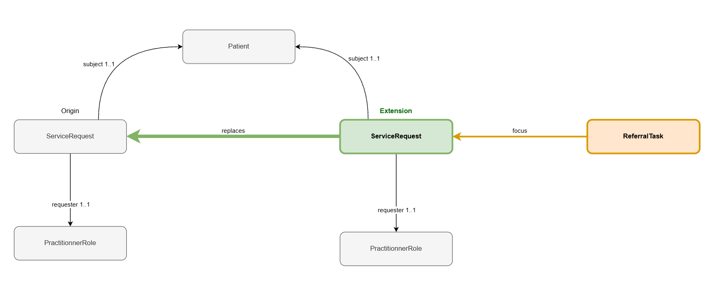

eReferral Implementation Guide
3.0.0 -

eReferral Implementation Guide
3.0.0 -

eReferral Implementation Guide - Local Development build (v3.0.0) built by the FHIR (HL7® FHIR® Standard) Build Tools. See the Directory of published versions
In some situations, a caregiver needs to keep providing care for the same prescribed service beyond the validity period of the original prescription. eReferral supports this extension / prolongation use case.
To support this scenario, the model allows the creation of a new ServiceRequest that extends the original prescription.

When a prescription’s validity period needs to be extended, a new ServiceRequest is created.
The new ServiceRequest references the original one using the standard FHIR relationship:
ServiceRequest.replaces.
This allows the system to maintain a clear history of prescriptions while preserving the original clinical intent: the original ServiceRequest remains unchanged and represents the initial prescription created by the prescriber for its own validity period.
The new ServiceRequest represents a new prescription to allow the continuation of care, covering a new validity period that follows on from the original prescription.
It keeps the same patient, requester, and prescribed service as the original prescription; only the validity period (and any administrative details tied to that period) differ.
The workflow associated with the prescription is tracked using a new ReferralTask resource (generated by eReferral system).
The ReferralTask references the current active ServiceRequest through the Task.focus element.### Benefits of This Approach
Creating a new ServiceRequest instead of modifying the original one provides several advantages:
This approach follows common FHIR workflow practices where continuation of care is represented through replaces relationships rather than in-place modification of the validity period.
IG © 2026+ Riziv-Inami Platform.
Package inami.fhir.be.ereferral#3.0.0 based on FHIR 4.0.1.
Generated 2026-10-29